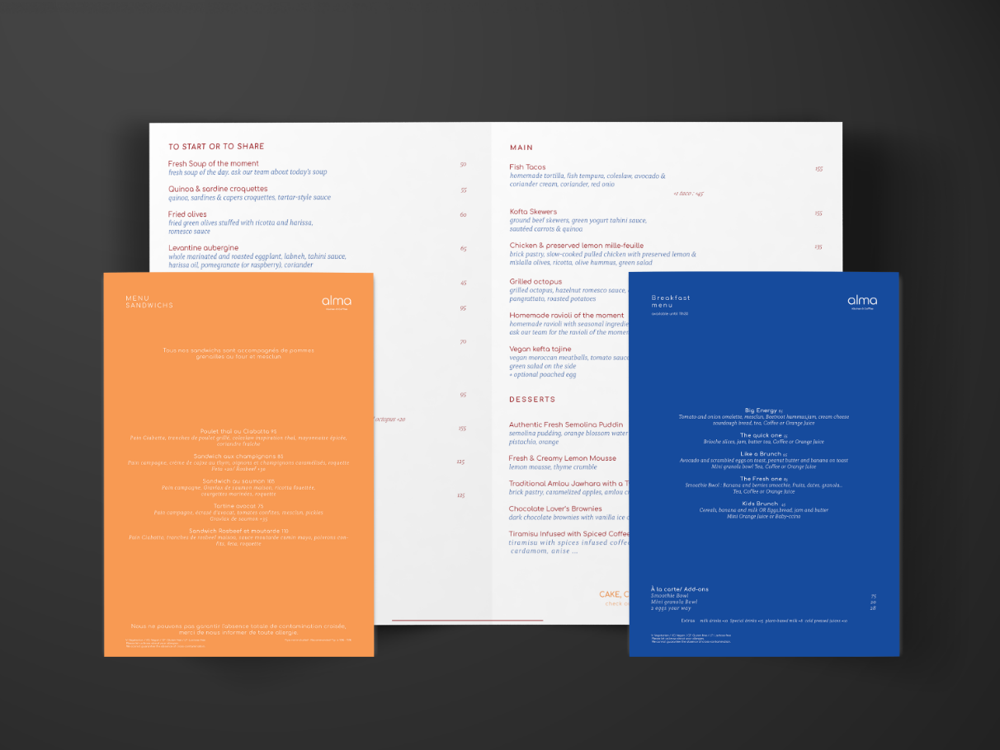

For this project, I had one question in mind: what does the customer see when they first enter ALMA? Put simply, it is a sophisticated restaurant with a well-thought-out interior design. To translate this into the menu design I chose to simplify these elements into a curated set of colors, using them to reflect and describe the space combined with principles of menu engineering.